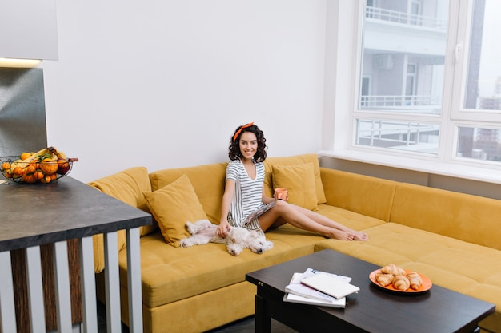

A compact living room can feel welcoming and polished when its layout, furniture and finishes work together. The aim is not to fit in as many things as possible, but to make the room comfortable to use while giving each item enough space.

Before choosing furniture, consider what happens in the room each day. Is it mainly for relaxing, reading, watching television, entertaining, or a mix of activities? Make a simple list of priorities, then measure the room, including doorways, windows and any fixed features such as a fireplace or radiator. A floor plan can help you test arrangements before moving or buying anything.
Keep routes through the room clear. Furniture that blocks a doorway or makes it awkward to reach a window can make even a well-decorated space feel cramped. Try to preserve a comfortable path between the entrance and the main seating area.
Look for pieces that fit the room rather than relying on standard assumptions about what a living room needs. A compact sofa, a pair of smaller chairs, or a sofa with a slim profile may be more practical than bulky seating. Check measurements carefully, including the depth and height of furniture, and consider how each piece will look in relation to the room’s proportions.
Furniture with visible legs can leave more floor in view, helping the space feel less crowded. A nesting table or small side table can provide a useful surface without taking up as much room as a large coffee table. If you need a coffee table, make sure there is enough space to move around it comfortably.
Everyday items can quickly take over a small room, so plan where they will go. Closed cupboards or baskets can keep clutter out of sight, while shelves can make use of vertical space. Choose storage that suits the room’s layout and does not obstruct movement or make the walls feel crowded.
Where possible, give items a designated home. A small tray for remotes, a basket for blankets or a shelf for books can make tidying easier without adding much furniture.
A restrained palette can help a small living room feel cohesive. This does not mean everything must be pale or neutral: colour can be introduced through a feature wall, artwork, cushions or a rug. Repeating a few tones across the room helps the different elements feel connected.
Make the most of natural light by keeping window areas uncluttered. Layered lighting can make the room more comfortable after dark: combine general lighting with a floor or table lamp for reading and softer ambient light for relaxing. Choose lamps that fit the available surfaces and floor space.
Comfort comes from more than the layout. Soft furnishings such as cushions, curtains and rugs can add warmth and texture, while artwork and personal objects make the room feel individual. In a compact space, a few considered pieces often have more impact than filling every surface.
A rug can help define the seating area, but check its size before buying. One that is too small may make the arrangement feel disconnected; one that is too large may overwhelm the room. Similarly, hang artwork at a height that relates to the furniture beneath it, rather than treating each wall as a separate display area.
A living room may need to serve different purposes over time. Lightweight occasional seating, movable side tables and storage that can be repurposed can make it easier to adapt the layout. Before adding a new piece, consider whether it solves a genuine need and whether it leaves enough room for everyday movement.
A successful small living room balances comfort, function and visual calm. Careful measuring, appropriately scaled furniture, useful storage and a clear palette can make the most of the space without making it feel overdesigned. If you would like help planning the room, Blue Door Interiors can be part of your search for an interior design approach that suits your home and preferences.
This notice explains that information submitted through the contact form should be used to respond to your enquiry and handled in line with the applicable privacy policy. Please review the full policy for details about data use, retention and your choices. Read the Privacy Policy